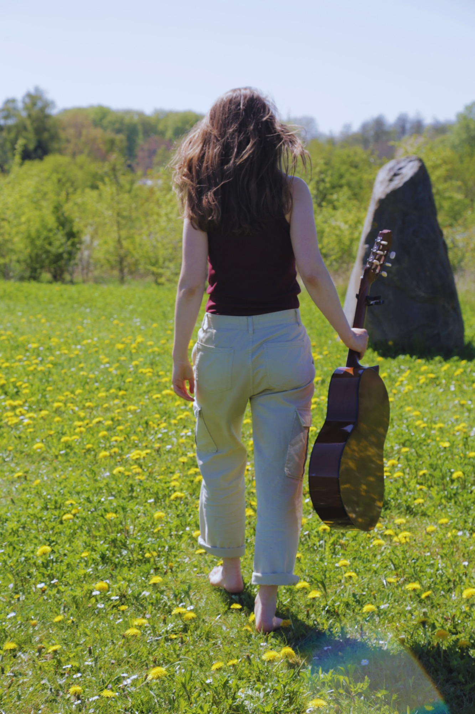
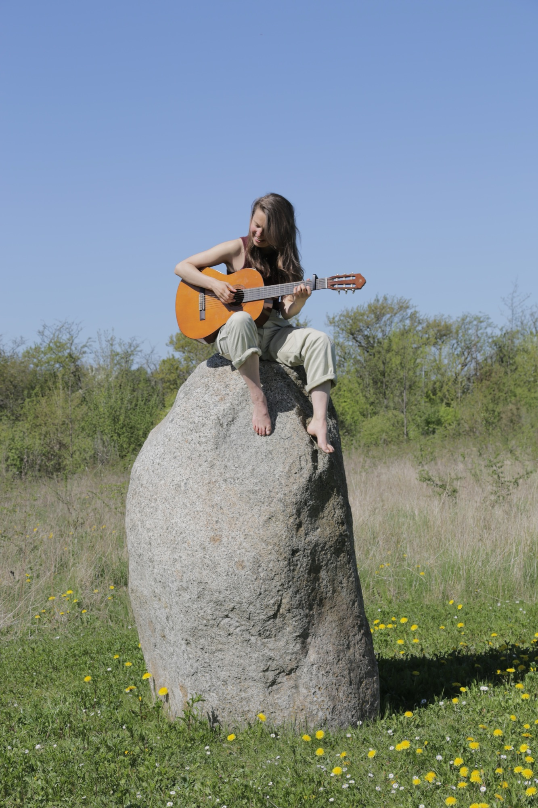
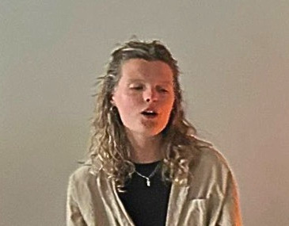
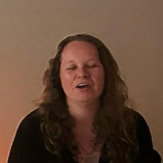

The Singing Field is a circle of sound, voice and free expression.
We start by warming up — voice liberation exercises, sounding with the body, finding the voice in different ways. Then the circle opens. We sing songs and mantras of different traditions, in different languages. You'll receive a sheet with the lyrics, which you can take home at the end.
During the circle you are free to sing, hum, be silent, dance, or lie down and receive. After each song, we sit in the echoes — a moment of silence. Halfway through, there's a little break with tea and chocolate.
The Singing Field is a space for you to express yourself, however that looks right now. Sometimes the field feels very vibrant and alive — we sing loud, joyful, we dance. Sometimes it's very intimate, everyone with closed eyes turned inwards. It's always different, emerging from whoever is in the room that night. This is not about singing beautifully. Most people who come don't usually sing — anywhere. We close with a moment of silence and gratitude. Then tea.
I want to create spaces where you feel free to find your own expression, and let the singing find you. So we walk away feeling resourced, alive, and more connected to what's possible.
Do we dare to dream, of what could be?
Singing as a way to embody more of who we are.
Music as a pathway to build community.
Voice as a portal to dream a new dream of what's possible for humanity.
We sing together, awakening this dream, and through our singing we feel it's already here.
The village is already here.


Music has always been an important part of my life. From my very first iPod, and the first time I touched a guitar when I was 11 years old and wanted to be like my father, who used to play us lullabies before going to bed.
The most inspiring thing about music for me was always the part of doing it together. I immediately started to play together. I started a band, and with my high school group of friends we were always singing. When we went on our holidays we collectively chipped in so I could bring my guitar wherever we went, and we danced and sang to made-up songs and songs we loved.
I lost my love for a while when at the end of high school my band fell apart — we all went to university, and I suddenly had the thought I had to be "good." A "good guitar player." It killed my joy. I stopped playing for years. I focused on buying LPs, going to live music, listening to music with my friends. At one point I became a DJ, as my alter ego Johanna Boogie. As Johanna Boogie I could really let out the deep joy I have for music and connection. Taking people with me, dancing and celebrating life together. Mostly at weddings and parties for loved ones.
When I was 28, my long-term partnership ended. I was heartbroken. I went to live in community. One night one of my fellow community members wanted to organize a singing circle. She didn't want to do it alone and asked me to join her — she had seen me play guitar once. I felt scared, because I'd been living in my "I'm not good enough on guitar" story for years. But I felt moved by my connection with the community and joined her. We sang together that night in our communal room, with so much shared joy. The community felt closer that night.
I fell in love with my guitar again. Sitting by the river, singing and playing. Praying. It felt like it was all I had to hold on to. Keep on playing with my bleeding heart.
When back home, I facilitated a singing circle in my mom's yoga class. And it became clear to me: this was what I needed to do right now. I felt I touched something — something that, without me doing or efforting, moved through me and was beyond me. People felt nourished, touched, like they could feel their feelings in a way that was usually hard for them. People told me they were singing for the first time in their lives. That they felt held. This was beyond me. This was a field, co-created by all of us. And somehow I got to lead it. It was The Singing Field.
And so The Singing Field was born. Songs started to move through me, often right after I facilitated a Singing Field. I started leading regular Singing Fields in Amsterdam and Utrecht, and the response kept surprising and touching me deeply. What a love... what aliveness we co-created together. This was much more than singing together. It was what I want all my work to be about: tapping into the potential of being human, together. Feeling what's possible for humanity.
We were singing the new world into being.
I'm passionate about creating a world that works for all life. My life is about creating spaces in which we can sense into this, practicing new ways of being. I do this as a career and life coach, a group facilitator, and a community builder. Creating regenerative culture — culture that nourishes us, sourced from interdependence, trust, and presence.
Musicians who show up wherever the field lands.
Wherever I travel, I invite other musicians to join. Over time, a living collective has formed around The Singing Field — musicians who bring their instruments, their voices, their full presence into the circle. Some appear regularly in Amsterdam and Utrecht; others join when the field lands in their city.
The collective is alive and growing.

Voice · The Netherlands

Percussion · The Netherlands